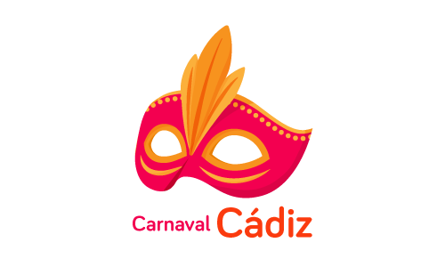
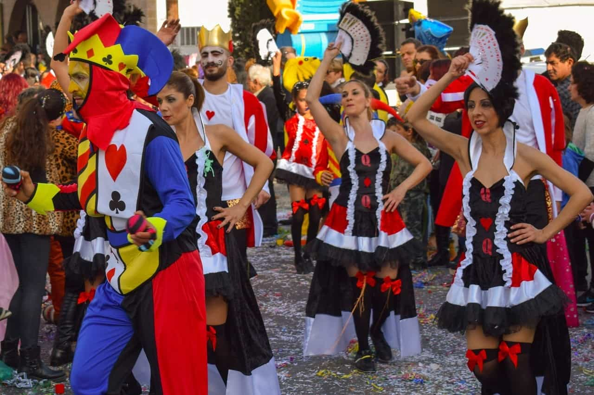

INICIO
HISTORIA
AGRUPACIONES
CONCURSO
El Carnaval de Cádiz es uno de los carnavales más famosos e importantes de España, por lo que ha sido reconocido en 1980 conjuntamente con el Carnaval de Santa Cruz de Tenerife, con la declaración de Fiesta de Interés Turístico Internacional.

Para aclarar el origen del Carnaval los estudiosos nos remiten a distintas civilizaciones que, sin usar el mismo concepto de la fiesta, han manejado objetos y utensilios similares a los que se usan en Carnaval, y recuerdan el origen remoto que pueden suponer las bacanales, las saturnales (al dios Saturno) y las lupercales (al dios Pan), celebraciones que se conocieron tanto en la antigua Grecia como en la Roma clásica. Sin embargo, parece ser que el Carnaval de Cádiz, como la mayor parte de las celebraciones del mismo tipo en Europa, es un hijo, aunque sea pródigo, del cristianismo.
Su principal significación es que autoriza la satisfacción de todos los apetitos que la moral cristiana, por medio de la Cuaresma, refrena acto seguido. Pero al dejarlos expansionarse durante un periodo más o menos largo, la moral cristiana reconoce también los derechos de la carne, la carnalidad. El Carnaval encuentra así, además de su significación social y psicológica, su función equilibradora en todos los aspectos. Y todo pese a que en 1523, Carlos I había prohibido totalmente las máscaras. Pero sin duda con el transcurso del tiempo distintos aspectos se han ido marcando con mayor profundidad hasta alcanzar en Cádiz una fiesta distinta. En el proceso de su propia definición, el Carnaval gaditano toma peculiaridades del italiano, explicable por la influencia fundamentalmente genovesa que Cádiz conoció desde el siglo XV: tras el desplazamiento hacia el Mediterráneo de los turcos, los comerciantes italianos se trasladan a Occidente, encontrando en Cádiz un lugar de asentamiento perfectamente comunicado con los objetivos comerciales que los genoveses buscaban: el norte y centro de África. Los antifaces, las caretas, las serpentinas, los papelillos (confeti) son otros tantos elementos que se asimilaron del carnaval italiano.